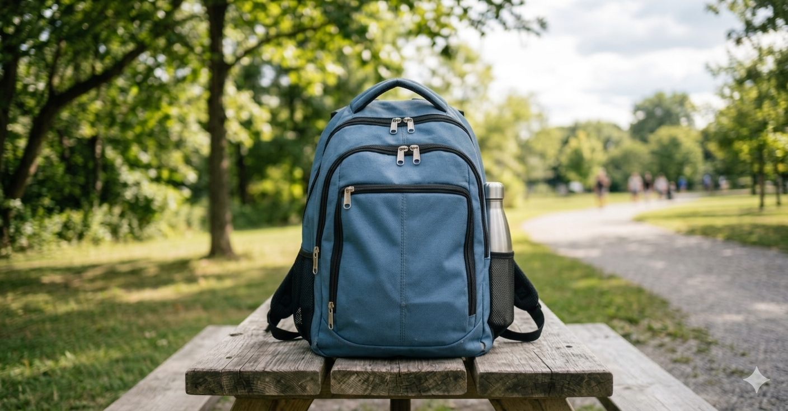
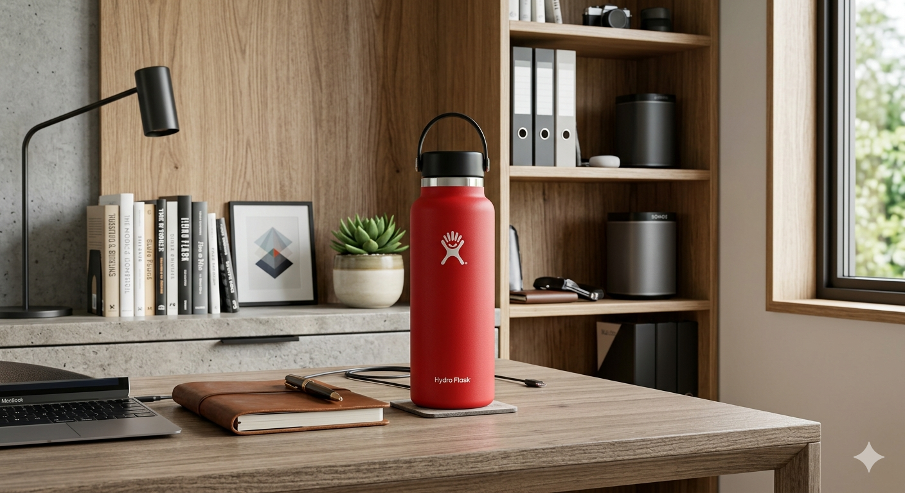

Back2Owner uses AI-powered image matching to connect lost items with their owners — faster, smarter, and safer.
Three easy steps to reunite you with your lost belongings
Submit a detailed report of your lost or found item with photos, description and location in under 2 minutes.
Our AI scans all reports and compares images and descriptions to find the most likely matches instantly.
Chat securely through the platform with the finder or owner and arrange a safe handover on campus.
Browse the most recent lost and found reports on campus
Near Central Library Gate
Today
Near Main Street
Yesterday

Near Cafeteria
Jun 13, 2024
Gymkhana Area
Jun 12, 2026

Boys Hostel Mess
Apr 26, 2026
Built specifically for campus life at IIT Patna
"Lost something? We'll find it for you."
Our intelligent system compares lost and found reports using item images and descriptions. Powered by the Gemini API, it surfaces the most likely matches instantly.
Connect with finders or owners inside the platform. No phone numbers. No personal info. Just safe, easy coordination.
Filter by category, location, or date. Find exactly what you're looking for in seconds — no scrolling through endless posts.
Get instantly notified the moment a match is detected. No waiting, no manual searching — just instant alerts to your account.
Purpose-built for IIT Patna — where losing your ID, keys, or wallet can ruin your day. Smarter than any WhatsApp group or notice board.
Back2Owner is a campus lost and found platform built for students of IIT Patna. It is a proper system to report, search and claim lost items — all in one place.
Every semester, a large number of items get lost on the IIT Patna campus. ID cards, wallets, keys, water bottles, laptops, notebooks — these things go missing all the time. And when they do, students have no proper way to report it.
The only options right now are posting in WhatsApp groups, putting a note on a notice board, or just hoping someone returns it. These methods do not work well. The post gets buried in the group chat within hours. The notice board nobody checks. And most of the time the item is just gone forever — even when someone on campus actually found it and had no way to reach the owner.
The real problem is not that people are dishonest. The real problem is that there is no system connecting the person who lost something with the person who found it.
Back2Owner gives every student a simple way to report a lost or found item in under 2 minutes. You fill in the item name, description, location, date and upload a photo. That report is stored in our database and is visible to everyone on the platform.
But we did not stop at just a reporting system. The bigger problem is matching — how do you know that the wallet someone found near the library is actually your wallet? This is where our AI comes in. Back2Owner uses the Gemini API to automatically compare lost and found reports using item images and descriptions. When a likely match is found, both students get notified immediately.
No more scrolling through chat groups. No more posting and waiting. The system does the searching for you.
Our goal is simple — if something gets lost on this campus, it should find its way back to the owner. We want Back2Owner to become the first thing a student opens when they lose something, and the first place a student checks when they find something.
This platform was built as part of Capstone I at IIT Patna by a team of 5 students from the B.Sc. Computer Science and Data Analytics program. It is a real working system — with a real database, real authentication, and real AI matching. Not just a college project on paper.